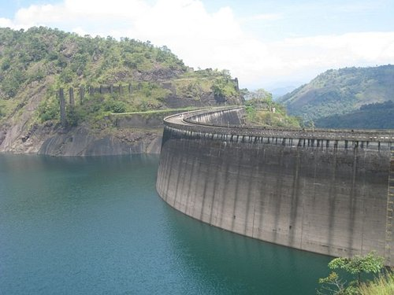

Idukki Arch Dam
Idukki Arch Dam, an engineering marvel, is located in the South-Indian state of Kerala. It is an arch dam with a double curvature and is built on River Periyar.
Read moreIdukki Hill View park
Hill View park is a nice landscaped area located at Idukki at a height of 350ft above Idukki Dam. This park have a water body with pedal boating facility.
Read more
Anchuruli waterfalls
Anchuruli, also spelled Anjuruli, is an emerging tourist destination and a catchment area of Idukki arch dam in Kanchiyar village near Kattappana in the district of Idukki in Kerala state, India.
Read more